Em ADENTRO, a imponência da humanidade foi posta em xeque quando os arcanos, seres poderosos e de natureza incompreensível, cruzaram seu caminho. Desde então, as duas espécies passaram por conflitos e mudanças drásticas para possibilitar sua coexistência em um mesmo mundo. Acompanhamos Bale, um arcano fascinado por máquinas que, após um incidente, sofre de uma misteriosa amnésia e é capturado pelo Império da Nação Humana, tornando-se um escravo. No entanto, sua situação está prestes a mudar novamente quando uma amizade esquecida está pronta para salvá-lo e ajudá-lo a redescobrir o mundo e seu passado.
ADENTRO é uma trama de mistério, ação e aventura da qual se desenrola em um universo único, recheado de elementos de fantasia e ficção científica. Como seu próprio nome já denota, a obra possui como principal objetivo a imersão, tanto em seus personagens e seus dilemas quanto no próprio universo em que a estória se passa, “adentrando” nas diferentes sociedades, culturas, políticas, locais e fantasias apresentadas.
A criação de seu universo é fruto de quase uma década de consumo das mais diferentes obras do entreterimento, como livros, séries, filmes e histórias em quadrinhos. Sua temática é resultado da hibridez de conceitos steampunk, medieval, e fantástico, tendo fortes inspirações nas doutrinas espirituais e filosóficas do budismo e formas de pensamento humanistas e antropocentristas.
CONFIRA O TRAILER DO ÚLTIMO CAPÍTULO!

Ilustrações, esboços e conceitos da ADENTRO


Assim, caminhamos!